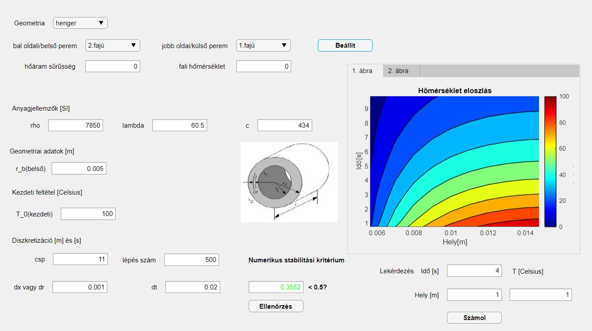
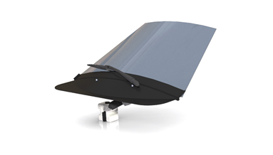
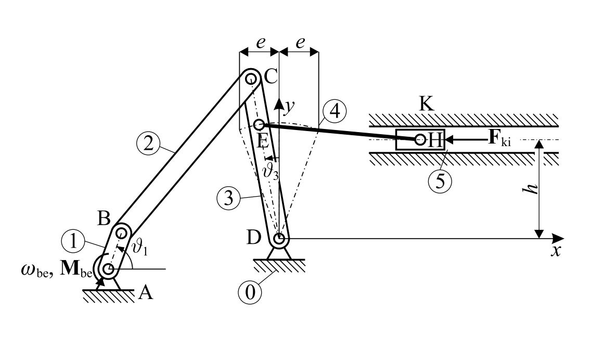

Fizika - Január 1, 2020
Hővezetési egyenlet megoldása végesdifferencia módszerrel
Ebben a cikkben a parciális differenciálegyenlet egyik megoldási lehetőségéről írok.
Ehhez készítettem egy Matlab szoftvert, mely a legáltalánosabb peremfeltételekkel és
geometriával megoldja a Fourier-féle hővezetési egyenletet egy dimenzióban.

Gépészet - Február 1, 2020
Szélvédő összeállítás megtervezése
Ebben a posztban egy konstuktőri versenyre épített városi koncepció autó szélvédő összeállításának megtervezését
írom le röviden. Összefoglalom a verseny előírásokat, leírom a kitűzött céljainkat, a tervezési folyamatot, végül az eredményeket összegzem.

Mechanika - Március 1, 2020
Négycsuklós mechanizmus tervezése
Az egyik legismertebb mechanizmus a négycsuklós mechanizmus. Számos helyen alkalmazzák, elég a gépjárművek egyes alkatrészeire gondolni pl. kormánymű,
ablaktörlő mechanika...stb. Most megnézhetjük, hogyan is lehet egy ilyen mechanizmust kinematikailag és dinamikailag megtervezni.
Egészség - Június 1, 2020
A futás egészségtani hatása
Öröm, tanulás, kitartás, küzdelem, boldogság: a futás maga az élet. A rendszeres sport segít, ha problémád van, támogat abban, hogy jobban bírd a zsúfolt hétköznapokat, rengeteget tanulhatsz általa önmagadról, vagy egyszerűen „csak” örömet ad.
Könyvek - Július 1, 2020
Márai Sándor: Az igazi
Egy nő tudja az ilyesmit. Lehet-e az érzelmeket az értelem segítségével megsemmisíteni, teszi fel a kérdést Márai e mélylélektani drámában. A válasz: nem, mert az érzéseket néha, szerencsés esetben meg lehet szelídíteni és el lehet sorvasztani, de az értelem soha nem győzheti le.
Pénzügyek - Auhusztus 1, 2020
Beszéljünk a pénzügyekről!
Részvények, kötvények, BUX index, tőzsde ... mik ezek és mit kell tudni róluk? Az emberek többségének célkitűzései között szerepel, hogy egyszer majd nagy háza lesz, sport kocsival fog furikázni és körbe fogja utazni a világot. Ezekre mindenképpen pénzre van szükségeségünk. A pénz fontos szerepet játszik a mi világunkban, még se tanulunk róla semmit. Ideje egy kicsit belemerülni a pénzügyek világába!